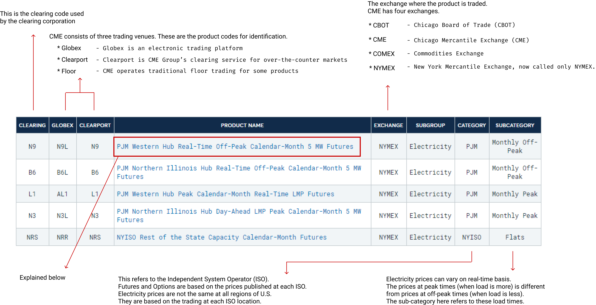
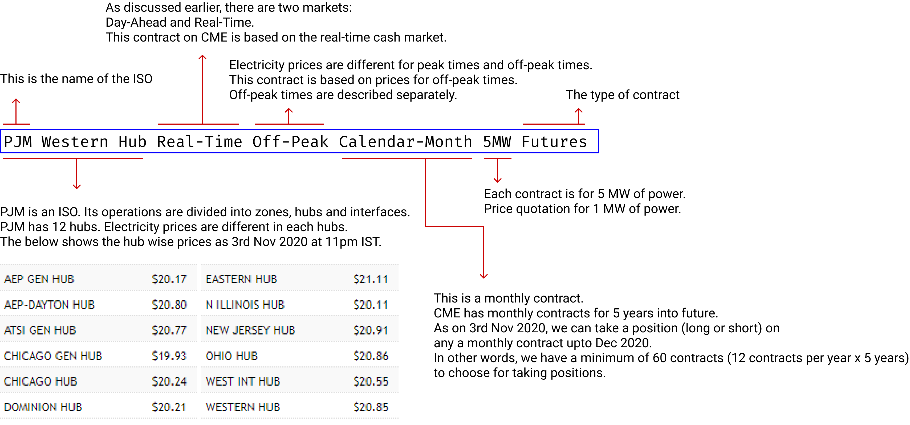
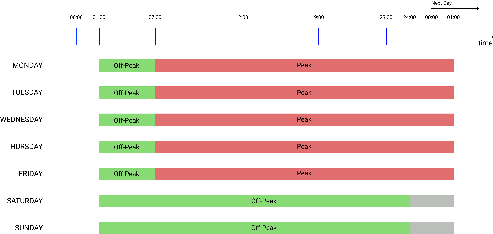

Electricity Derivatives in USA
To understand any derivatives, it is important to understand its underlying. For electricity derivatives, the underlying is electricity. The following few paragraphs explain the electricity system in the US and then rest of the document explain the derivatives on them.
The U.S. Electricity System
We can treat 'electricity' either as a product or a service. Just like there are manufacturers, distributors and consumers of any product, electricity too has its manufacturers, distributors and consumers. The combination of these, along with support infrastructure, represents the electricity industry or the electricity system. The current electricity system in the U.S. is a complex network of power plants (manufacturers), transmission and distribution wires (distributors), and end-users of electricity (consumers). This complex system is also often referred to as the electricity power grid.Generation
The power plants use a wide variety of energy resources to produce electricity, such as coal, natural gas, nuclear energy, or renewable resources such as water, wind, or solar energy. The United States generates about 85% of its electricity using conventional resources such as coal, natural gas, oil and nuclear power. About 12% of its electicity is generated from hydroelectric dams, large wind and solar installations, and other renewable resources. Some energy is also generated from 'combined heat and power (CHP)' sources, also known as cogeneration, that involves simultaneously producing electricity and heat from a single fuel source.Types of Generation
There are two types of generation in the U.S, namely, 1) Centralised Generation; and 2) Distributed Generation.
Centralised Generation
Centralised Generation refers to the large scale generation of electricity at centralized facilities. These facilities are usually located away from end-users and connected to a network of high-voltage transmission lines. The electricity generated by centralized generation is distributed through the electricity power grid to multiple end-users. Centralized generation facilities include fossil-fuel-fired power plants, nuclear power plants, hydroelectric dams, wind farms, and other sources.
Distributed Generation
Distributed Generation refers to a variety of technologies that generate electricity at or near where it will be used, such as solar panels and combined heat and power. Distributed generation may serve a single end-user or a few end-users or may be connected to a micro-grid or larger-grid. Common distributed generation systems are solar panels, small wind turbines and natural-gas-fired fuel cells, municipal solid waste incineration and biomass combustion or cofiring.
Transmission and Distribution
Once electricity is generated at a centralized power plant, it travels long distances through a network of interconnected high-voltage transmission lines to sub-stations, and from the sub-stations through a network of lower volatage power lines to the end-uses. To put it differently, we can say that there are three parts, as below.Transmission
It involves transmission of electricity from the centralized power plants to sub-stations through high-voltage transmission lines.
Substation
They are used to condition electricity as it moves through the grid. Substations can be used to either "step-up" or "step-down" electricity for making them suitable for final delivery.
Distribution
The distribution portion of the electricity grid comprises lower power lines that deliver electricity to end-users.
We can think of the electricity grid in similar way as the road network or grid. In a road network, we have highways and neighbourhood road system. The transmission lines are like our highways road system and the distribution lines are like our neighbourhood road system.
In U.S, electricity transmitted to residential homes is 120 volts. In India, it is 240 volts. The difference is due to historical and safety reasons.
End-Users
The following are the three types of end-users in U.S.- Industrial End Users: The industrial sector includes establishments such as mining, agriculture and constructions. It accounts for about 26% of U.S. electricity use.
- Commercial End Users: It includes commercial and government buildings accounting for about 36% of U.S. electricity use.
- Residential End Users: It accounts for about 38% of U.S. electricity use.
The following diagram shows the sources or electricity in U.S. over the years.

Independent System Operators (ISO)
Independent System Operators or ISOs are created under the U.S. Federal Law to consolidate and manage the operation of transmission facilities and to provide nondiscriminatory open transmission service for all generators and transmission customers.Currently, there are 10 ISOs in North America servicing two-thirds of electricity consumers in the U.S. and more than 50% in Canada. The following diagram shows the ISOs and their location on a map.

The ISOs serve as coordinators between supply and demand. But why do we need someone to coordinate this activity? Cannot it be done directly by the generators and end-users themselves? The answer is: not efficiently. The issue with electricity is that it cannot be stored. The current technology for storing is inadequate and prohibitively expensive. That means, electricity needs to be used as soon as it is generated. But we do not know how much energy will be consumed by the end-users at any given point of time, and therefore it is difficult to plan production. The consumption depends on various factors such as day of the week (working day or holiday), temperature (hot days, cold days or mild temperatures), economic activity (growth periods, recessions, etc.), competition, availability of local cheaper or renewable sources of energy (distributed generation), and other factors. Left it to the generators, the industry might have developed as a oligopoly resulting in higher electricity costs and inefficient systems. Keeping in view the future requirements and the need to create an efficient and transparent system, the Federal Government's Federal Energy Regulatory Commission (FERC) created ISO or RTOs (Regional Transmission Organisations). The RTOs are similar to ISO with minor differences and one of them being that they server a larger area than the ISOs.
The ISOs are independent organisations (could be non-profit organisations) established for the purpose of coordinating, controlling and monitoring the electricity grid. They perform a variety of functions (many of which are out of scope for this article) but the most important of all is the coordination between generation and consumption. To efficiently generate electricty, one must forecast consumption. The forecast is done for 1) Day Ahead; and 2) Off-Peak hours.
The below graph shows the load forecast vs real time consumption by one of the ISO - PJM Interconnection - as on 11pm IST on the 2nd Nov 2020.

The electricity is bought, sold and traded in wholesale and retail markets, similar to other commodities. The ISOs administer the wholesale prices. Once the wholesale market price are set, electricity is then sold in smaller quantities through retail electricity providers to end users, such as homes and businesses. Prices change constantly for each hour of the day as power use changes and available supply of electricity increases or decreases.
The ISOs act as exchanges between buyers and sellers in the wholesale market; but the exchange works differently from that of stock exchanges. One of the mandate of ISOs is to ensure that the electricity is supplied at the lowest cost possible to the end-users.
Market Operations
The ISOs conduct market operations that help sellers and buyers to trade. The ISO wholesale market is comprised of two distinct markets - the day-ahead and the real-time market.Day-Ahead Market
The day-ahead market opens 8 days before the trade date (TD-8). The sellers submit supply bids showing the amount of megawatts (MW) they are willing to provide and the prices they are willing to accept. The buyers submit demand bids showing what they are willing to pay for megawatts needed to serve their load. The day-ahead market closes the day before the trade date. Using market inputs, the ISO runs an optimization algorithm and produces the day-ahead schedules and prices. These schedules and prices are published on T-1 day.
Real-Time Market
The real-time market opens when the results of the day-ahead market are published on T-1 day. The market participants submit supply and demand bids, similar to day-ahead markets. The market closes about 75 minutes before each trading hour.
The prices in both day-ahead and real-time markets are known as Locational Marginal Prices (LMP). The locational market price is a combination of the following.
\[ Locational \; Marginal \; Price = System \; Energy \; Price + Tranmission \; Congestion \; Cost + Cost \; of \; Marginal \; Losses \]
Settlement
The settlement process in electricty market refers to metering, settlements and invoicing processing. This process begins 3 days after the trade date.
The day-ahead market can be thought of as the forward market, while the real-time market can be thought of as the cash market, if we are trying to find and equivalence to the stock market.
The question is: why two markets? Cannot a single market auction be used to determine the prices? The answer is No. The day-ahead market provides all market participants (including the ISO) the information about the supply and demand in MW for a particular day in future (the trade day) - (this can be thought of as the settlement day also, but as per ISO terminology it is trade day). Accordingly, the generators and distributors plan their generation and load balances respectively. However, real-time demand and supply could change. If the real time demand increases then the job of the ISO is to ensure that such demand is met from the real time market. In case of deficit power, the ISO procures balancing energy to manage demand that shows up in real-time. In case the demand falls suddenly, the ISOs coordinate with the generators to reduce supply. This balancing act is necessary because (as pointed out earlier) electricity cannot be stored. The real time demand must be met from real time supply. Therefore, the ISOs play an important role in ensuring that the demand and supply are matched.
Electricity Derivatives
The electricity derivatives are traded both on exchanges and OTC. In this article, we will discuss about the electricity derivatives traded on CME. CME offers the following products.- North American Power Futures
- North American Power Options; and
- European Power on NYMEX
One way to understand the products traded on CME is to look at the different types of contracts and how the contracts are named. The following picture shows the different types of electricity contracts available on CME.

The following picture shows how to interpret the name of a contract traded on CME.

Contract Specifications
Taking the same example of the future contract described above, the following is the contract specifications.| Contract Terms | Description |
|---|---|
| Contract Unit | 5 MWh Clears in multiples of the number of off-peak hours in the contract month. |
| Price Quotation | U.S. dollars and cents per MWh |
| Trading Hours | Sunday - Friday 6:00 pm - 5:00 pm (5:00 pm - 4:00 pm C.T) with a 60-minute break each day beginning at 5:00 pm (4:00 pm CT) |
| Minimum Price Fluctuations | 0.05 x 5 MW x 16 peak hours x #peak days/month |
| Listed Contracts | Monthly contracts listed for the current year and the next 5 calendar years. List monthly contracts for a new calendar year following the termination of trading in December contract of the current year. |
| Settlement Method | Deliverable |
| Floating Price | The Floating Price will be determined for each contract month. The floating price will be equal to the arithmetic average of the PJM Western Hub Real Time LMP provided by PJM Interconnection, LLC (PJM) for all off-peak hours in the contract month. |
| Termination of Trading | On the second to last business day of the month prior to the contract month, each N9/N9L open positions into a strip of PJM Western Hub Real-Time Off-Peak Calendar-Day 5 MW Futures - WOR/WOL in the originally specifically contract month. |
| Days or Hours | Off-Peak shall mean Monday through Friday Hour Ending (HE) 0100 - 0700 and 2400 Eastern Prevailing Time (EPT) Saturday - Sunday HE 0100 - 2400 EPT including North American Electricity Reliability Corporation holidays. |
| Settlement Procedure | Delivery under the PJM Western Hub Real-Time Off-Peak Calendar-Month 5MW Futures Contract shall be by cash settlement. Final settlement, following termination of trading for a contract month, will be based on the Floating Price. The final settlement price will be the floating price calculated for each contract month. |
Peak and Off-Peak Hours
The following diagram shows the peak and off-peak hours as per CME contract specifications.
How to Trade?
At the time of writing this article (4th Nov 2020, Wednesday at 01:46 IST), the time at PJM zone is 3rd Nov 2020, Tuesday 2:06 PM. This is a peak-time as per CME contract. The price of a MWh of electricity at Western Hub zone of PJM is $19.53. The off-peak price on the same day (at around ) is .Is there a difference between peak and off-peak prices? The answer is Yes. For example, the price for PJM Western Hub at peak time (00:39) on Wednesday, 4th Nov 2020 is $19.53. The price at off-peak time () is .
Let's consider that we expect electricity prices to go up in December 2020 as we are expecting a very cold winter. Currently, on CME, the PJM Western Hub Off-Peak Dec 2020 contract is trading at $26.25 (per MWh). Our expectation is that this will be more than $30 (per MWh) as people will start using heaters at higher degrees to warm their houses. To gain from our expectations, we can take a long position in this contract. The minimum contract size (or lot) for this particular contract is 5MWh. Let's suppose, we take 1 unit of this contract. We can place a limit order for $26 and our order got confirmed. Our contract value would be:
\[ Contract \; Value = 1 \; unit \; (or \; lot) \; \text x \; 5 \; MW \; \text x \; $26.25 \; (per \; MW) \; \text x \; 186 \; (total \; number \; of \; off-peak \; hours \; in \; contract \; month). \] or \[ Contract \; Value = $24,412.50 \] Let's suppose in Dec 2020, at the time of settlement the floating price is $30.25 (as per our expectation), the contract value would be: \[ Contract \; Value = 1 \; unit \; (or \; lot) \; \text x \; 5 \; MW \; \text x \; $30.25 \; (per \; MW) \; \text x \; 186 \; (total \; number \; of \; off-peak \; hours \; in \; contract \; month). \] or \[ Contract \; Value = $28,132.50 \] Our profit from this contract would be: \[ Contract \; Value = $3,720 \]